Es wird das Optimierungsproblem
| 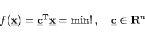 | (18.109) |
über dem beschränkten Bereich 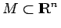, der mit konvexen Funktionen 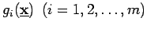 durch 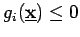 beschrieben ist, betrachtet. Ein Problem mit nichtlinearer, aber konvexer Zielfunktion  wird in diese Form überführt, indem
wird in diese Form überführt, indem
| 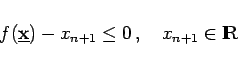 | (18.110) |
als weitere Nebenbedingung aufgenommen und
| 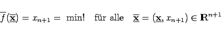 | (18.111) |
mit 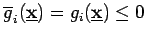 gelöst wird.
Die Grundidee des Verfahrens besteht in der iterativen linearen Approximation von M in der Nähe des Minimalpunktes  durch konvexe Polyeder, womit das Ausgangsproblem auf eine Folge linearer Programme zurückgeführt wird.
durch konvexe Polyeder, womit das Ausgangsproblem auf eine Folge linearer Programme zurückgeführt wird.
Zunächst wird ein Polyeder
| 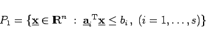 | (18.112) |
bestimmt. Aus dem linearen Programm
| 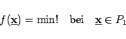 | (18.113) |
wird ein bezüglich  optimaler Eckpunkt 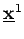 von P1 erhalten. Ist 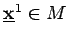, dann ist die Optimallösung des Ausgangsproblems gefunden. Anderenfalls wird eine Hyperebene
optimaler Eckpunkt 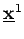 von P1 erhalten. Ist 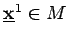, dann ist die Optimallösung des Ausgangsproblems gefunden. Anderenfalls wird eine Hyperebene
| 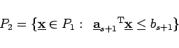 | (18.114) |
erhalten wird.
Die Abbildung zeigt eine schematische Darstellung des Schnittebenenverfahrens.